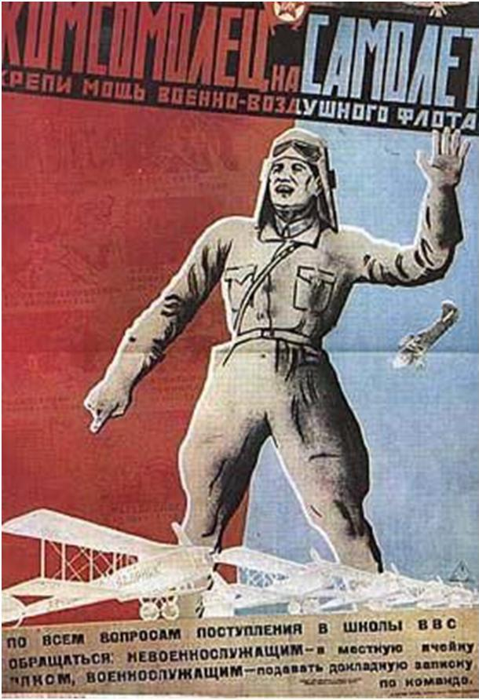
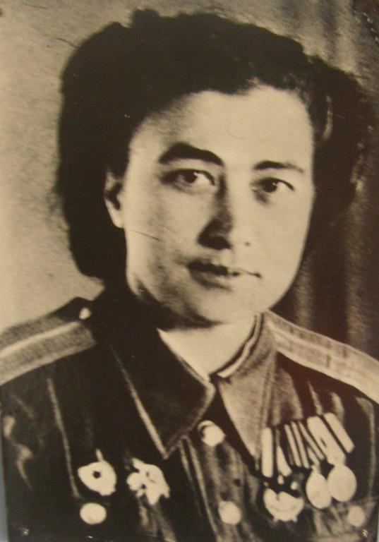
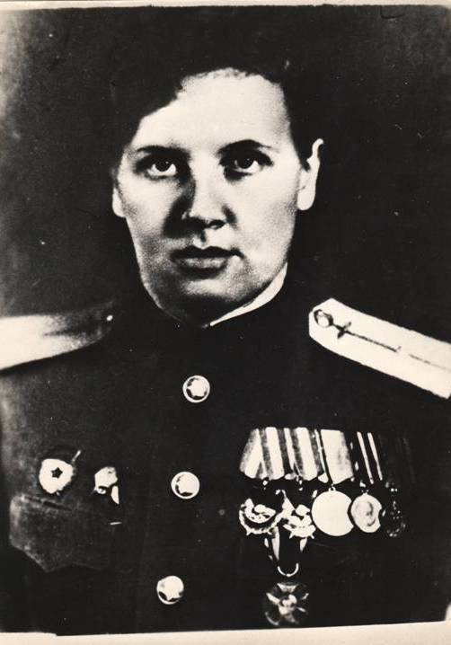

Знаменитые выпускники Прокопьевского аэроклуба

В 1934 году в Прокопьевске был создан Аэроклуб. Следуя призыву комсомола «Комсомолец на самолет!», многие юноши и девушки нашего города, Киселевска и Прокопьевского района пришли в Аэроклуб.
Аэроклуб разместился в доме № 12 по улице Рудничной. Дом этот был довольно большим, одноэтажным. А летом 1935 года в Прокопьевск прилетели первые два самолета. Полгорода бежало встречать на Тырган прилетевших – тогда не было трамвая.
Первый выпуск летчиков прокопьевского Аэроклуба провели в торжественной обстановке в клубе им. Артема осенью 1935 года.
Ежегодно в Аэроклубе обучалось только одних курсантов – пилотов до 200 - 250 человек. Немало готовил Аэроклуб планеристов и парашютистов. В доме на Рудничной в зимнее время проходили теоретические занятия. За городом были построены летние палаточные лагеря. Здесь курсанты практиковались.
Упорно учились и трудились аэроклубовцы, и, наконец, первый самостоятельный вылет. Его сделал Миша Чирков, сильный, смелый человек, отличный парень. На фронте летал на бомбардировщиках. Сделал 63 боевых вылета и погиб на 64 – м.
Перед курсантами стояла задача – овладеть новой техникой, выжать из техники все, что она может дать. И они упорно работали над выполнением этой задачи. Много трудностей было в их учебе – ведь учились они после основной работы. Приходилось тратить немало энергии на теоретическое изучение материальной части самолета и техники пилотирования.
За короткий промежуток времени курсанты научились самостоятельно управлять самолетом. Многие сделали по 45 самостоятельных полетов. Летали в зону, свободно выполняли сложные задачи пилотажа: мертвые петли, штопоры, виражи и т.д. За время летной практики не было ни одного аварийного случая, ни одной порчи материальной части. Курсанты берегли технику, как зеницу ока. У каждого была мечта – стать похожим на легендарного Чкалова.
Среди выпускников клуба было 29 девушек. Некоторые из них летали на штурмовиках.

Наша землячка Евгения Попова cлужила в прославленном 46-м гвардейском женском ночном бомбардировочном авиационном Краснознаменном Таманском ордена Суворова полку («ночные ведьмы») под командованием Марины Расковой. До самого дня Победы Женя пилотировала бомбардировщик, на ее счету 360 боевых вылетов. В Берлине Евгения Попова оставила свой автограф на стене Рейхстага: "Женя Попова из Сибири".

Мария Ильинична Толстова, воспитанница и инструктор Прокопьевского аэроклуба, совершила 48 боевых вылетов на «летающем танке» штурмовике ИЛ – 2. До Берлина Мария Ильинична долетела в составе 175–го Гвардейского авиаполка. За боевые заслуги М. И. Толстова награждена десятью орденами и медалями.
По неполным данным, 48 выпускников Прокопьевского аэроклуба погибли на фронте. Клуб прекратил свое существование по причине того, что все ушли на фронт. Долгие годы судьба многих погибших аэроклубовцев была известна. Спустя много лет после войны узнали о судьбе Павла Зубарева, Ивана Сергеева, Валерия Полуновского.
На сегодняшний день установлено, что пятеро прокопьевских аэроклубовцев удостоены высокого звания Героя Советского Союза:
Буслов Федор Васильевич – в 1945 году,
Полуновский Валерий Федорович – в 1990 году,
Черных Иван Сергеевич – 1942 году, посмертно,
Чеченев Михаил Семенович – в 1946 году,
Селиванов Евграф Иосифович – в 1945 году, посмертно.
Тысячи вылетов совершили они в годы войны. В той обстановке каждый их вылет был подвигом. 2380 часов 30 минут составляет общее время вылетов Селиванова Евграфа Иосифовича – это 100 суток непрерывной боевой вахты.
Буслов Федор Васильевич с апреля 1944 года по апрель 1945-го участвовал в боях за освобождение 21 города Европы.
Чеченев Михаил Семенович сажал свой самолет на минное поле после выполнения боевого задания, перетянув за линию фронта.
Командир бомбардировщика Иван Черных 16 декабря 1941 года повторил подвиг Николая Гастелло. Загоревшийся самолет был выведен на боевой курс и словно огненный шквал пронесся над шоссе, сбрасывая бомбы и взрывами поражая противника.
Выйдя из атаки, объятый пламенем, бомбардировщик снова развернулся на дорогу, экипаж направил свой пылающий пикировщик в центр мототехколонны на оцепеневших от ужаса фашистов, закрыв им дорогу на Ленинград. Последними словами героев были: «Прощайте, друзья! Прощайте, товарищи! За Родину! За Ленинград!». Похоронен 23-летний младший капитан на месте гибели в районе станции Чудово Новгородской области.
Полуновский Валерий Федорович, совершив воздушный таран остался жив и был представлен к званию Героя Советского Союза. Но через несколько дней он был сбит над территорией, занятой врагом, раненым попал в плен, стал узником концлагерей Гросс Розен и Бухенвальд.
После неоднократных попыток побега и жестоких избиений ему удалось остаться в живых. По окончанию войны Валерия Федоровича, прославленного летчика разыскал его боевой товарищ и исправил несправедливость судьбы. 11 декабря 1990 года по каналам ТАСС был передан Указ Президента СССР о присвоении Полуновскому Валерию Федоровичу звания Герой Советского Союза. Имя его присвоено Пермскому авиационно-спортивному клубу, в котором он работал в послевоенные годы.
Имена многих аэроклубовцев носят улицы различных городов и населенных пунктов нашей Родины, корабли , школы и предприятия. Улицы нашего города также названы именами героев: Калинина, Конева, Негриева, Селиванова, Черных.
Память о воинах, храбро сражавшихся на фронтах Великой Отечественной войны живет в наших сердцах и увековечена в экспозициях городского и школьных музеев, на стелах и мемориальных досках.
Они были совсем молодыми, наши аэроклубовцы, но своими делами они навеки остались в памяти прокопчан.
Назад